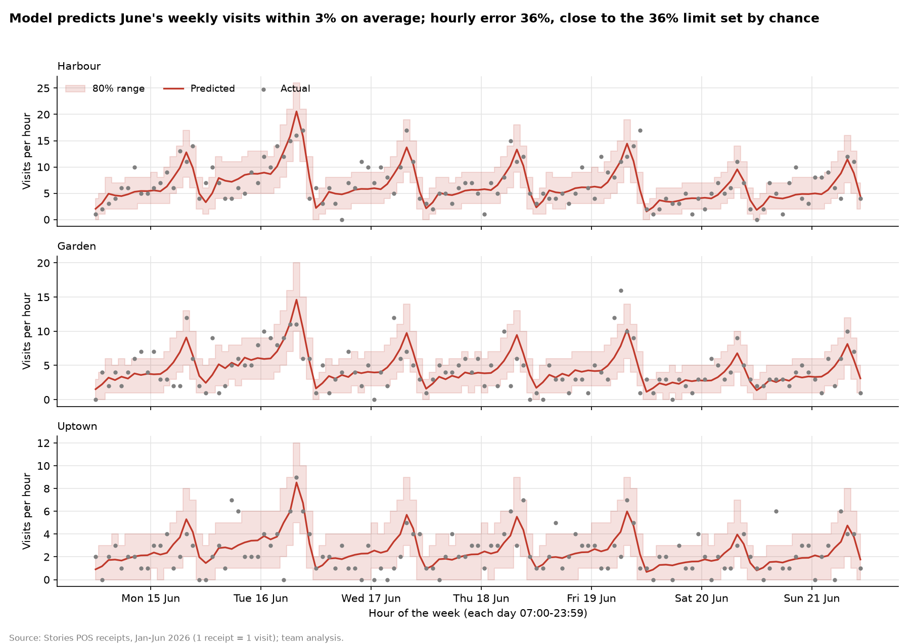
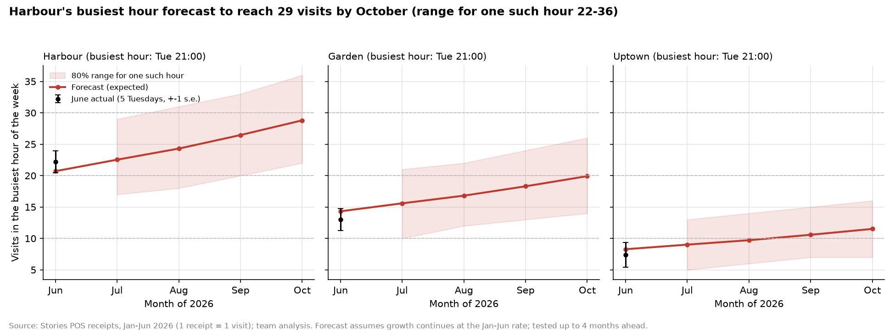

Stories visit forecaster
Pick a branch and a day. The model predicts customers (receipts) for every hour. For past days you can compare it with what actually happened.
Customers per hour
Hour-by-hour table, with staff needed
The whole week
Expected customers per hour. Click a day to open it above.
Check it yourself: the June test
The model below was trained on Jan–May only, then asked to predict all of June. These numbers are recalculated in your browser from the saved model and the real June data.
Noise limit = the error even a perfect model would make, because at 2–7 customers an hour chance alone moves the count a lot. A model can't beat it, only reach it.
Charts


1 receipt = 1 customer (a group paying together counts once). Dates after 30 June are forecasts (up to 31 October, the range the model was tested on). Source: Stories POS receipts, Jan–Jun 2026.